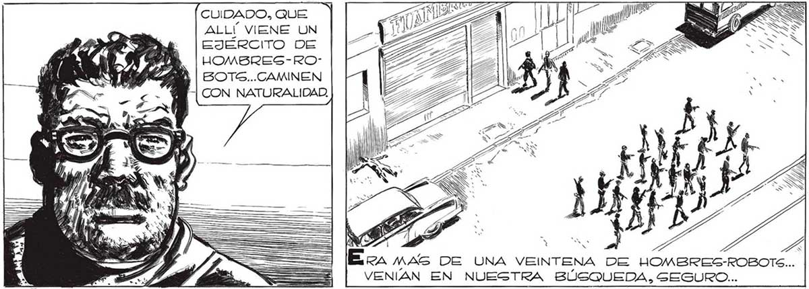
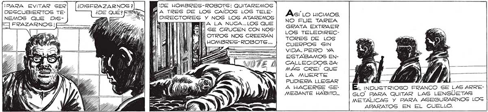
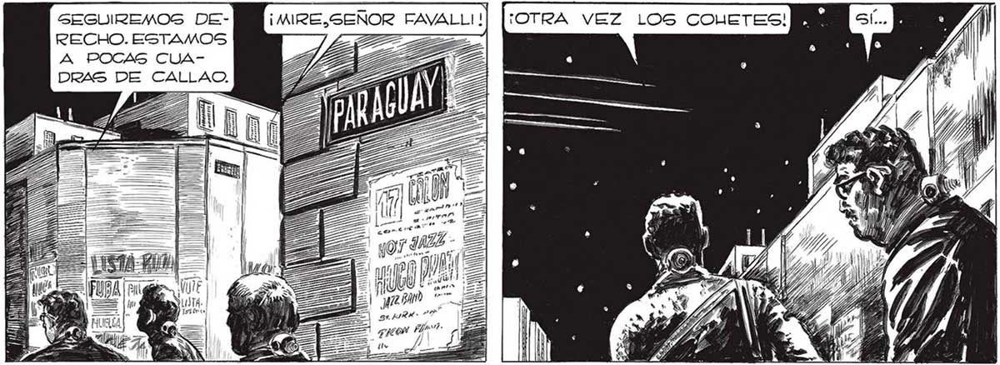

260 ¡PARA EVITAR SER DEGSCUBIERTOS TENEMOS QUE DISA y ¿DIGSERAZARNOS ? o, CUIDADO, QUE ALLÍ VIENE UN EJERCITO DE HOMBRES-ROBOTS...CAMINEN NN Arc eL noms Ez, MAS DE UNA VEINTENA DE HOMBRES-ROBOT VENIAN EN NUESTRA BÚSQUEDA. SEGURO... CENTRO... LA IDEA RESULTÓ... AHORA PODREMOS SEGUIR HACIA EL RE DE LA CALLE. ¡DE HOMBRES-ROBOTS! QUITAREMOS | A TRES DE LOS CAIDOG LOS TELEDIRECTORES Y NOS LOS ATAREMOS HA LA NUGA..LOS QUE IÓ GE CRUCEN CON NOS Éá] OTROS NOS CREERAN 2 HOMBRES-ROBOTG... En GR SEGUIREMOS DERECHO. ESTAMOS A POCAS CUADRAS DE CALLAO, Asi Lo uicimos. NO FUE TAREA GRATA EXTRAER LOS TELEDIRECTORES DE LOS CUERPOS SIN VIDA. PERO YA ESTABAMOS ENCALLECIDOS. JA: MAS CREI QUE LA MUERTE PUDIERA LLEGAR A HACERSE SEMEJANTE HABITO... AÁ É. inoustTriO0sO FRANCO SE LAS ARREGLO PARA QUITAR LAS LENGUETAS METALICAS Y PARA ASEGURARNOS LOG APARATOG EN EL CUELLO. Me esreeMECI, NOGOTROS PODIAMOS SER TAMBIÉN HOMBREGROBOTS. PERO LO ¡MPORTANTE, AHORA ERA QUE NI GE FIJZARON EN NOSOTROG. ¡OTRA VEZ LOS COUETES!


